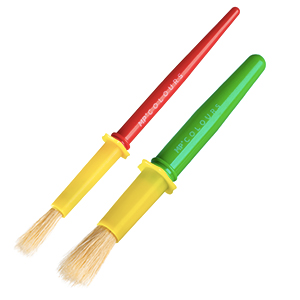

Dominadas: una barra y 6 ejercicios es lo único que necesitas para ponerte en forma en casa | GQ España
 Skip to main content Edition España Australia Brasil Britain China France Germany India Italia Japan Korea México Middle East Portugal South Africa Taiwan Thailand Türkiye United States Россия Buscar Suscríbete Open Navigation Menu Noticias Moda Zapatillas La Buena Vida Cuidados Compras GQ TVNuestros periodistas recomiendan de manera independiente productos y servicios que puedes comprar o adquirir en Internet. Cada vez que compras a través de algunos enlaces añadidos en nuestros textos, Condenet Iberica S.L. puede recibir una comisión. Lee aquí nuestra política de afiliación.
FitnessDominadas: una barra y 6 ejercicios es lo único que necesitas para ponerte en forma en casa
Si estás buscando algún entrenamiento nuevo para ponerte en forma presta atención porque solo necesitarás una barra de dominadas y algo de espacio.Por Emily Abbat e
22 de febrero de 2021 Westend61*Este artículo sobre los ejercicios con barra de dominadas fue publicado originalmente en la edición estadounidense de GQ.
Al hacer ejercicio en casa , tenemos la necesidad de ser creativos con los entrenamientos. Y aunque no hay nada de malo en probar algunas nuevas variaciones de flexiones en el suelo de tu habitación o seguir una r utina de ejercicios de cardio por teléfono mientras tratamos de no molestar a los vecinos de abajo, nos encontramos ansiando un entrenamiento que nos haga sentir como que estamos en el gimnasio.
Ahí entra a la barra de dominadas desplegable y fácil de instalar , del tipo que se pone en el marco de una puerta. Afortunadamente, parece ser uno de los pocos elementos de equipos de gimnasio para casa que no se han agotado en todas partes.
Sí, tener una barra de dominadas montada en cualquier lugar semipúblico de tu casa hace sentir como si estuvieras en Taxi Driver . Pero no es que vayas a tener una cena con amigos exactamente, y afortunadamente la barra de dominadas se desmonta con bastante facilidad para cuando vuelvan las visitas.
La otra ventaja de tener una barra de dominadas: ponerte cada vez más fuerte . El pull-up es uno de los ejercicios más efectivos para la parte superior del cuerpo: hay una buena razón por la que a menudo se usa como medida del estado físico general . El entrenador de famosos Don Saladino , propietario del gimnasio Drive 495 de Nueva York , está de acuerdo.
Manejar el peso corporal es un arte importante , dice. Ayudará tanto a la movilidad general como a la mejora de la composición corporal . Músculos, en otras palabras. Saladino señala que puedes subir el nivel de la barra de dominadas colgando unas cuerdas de suspensión de TRX , pero también debes saber que una barra de dominadas te permite hacer más que conocido pull-up normal . Aquí, Saladino ofrece hasta seis ejercicios diferentes. Siéntete libre de cortarte el pelo y ponerte una cresta si te ves inspirado.
1. Pull-up
Lo conoces, lo amas. Como esto es en casa, y una dominada comienza con una extensión de brazo completo, es casi seguro que tendrás que doblar las rodillas. Sujeta a la barra de dominadas con un agarre por encima de la barra (los nudillos mirando hacia usted), con las manos a la distancia del ancho de los hombros. La espalda ligeramente arqueada, con los hombros fijos, sube y coloca la barbilla sobre la barra . Baja en una caída controlada para una repetición. Si aún no puedes poner la barbilla sobre la barra, o solo por unas pocas repeticiones, trabaja en la primera parte: tensando los hombros con los brazos, quema los músculos de esa manera.
2. Chin-up
Igual que el anterior, pero con un agarre por abajo (nudillos mirando hacia afuera). Esta versión trabajará más tus bíceps.
3. Pull-up de agarre mixto
Un pequeño giro en las dominadas tradicionales, esta variación te hará trabajar más el core a medida que intentas hacer una ligera rotación . Sujeta la barra con un agarre bajo con la mano derecha y un agarre por encima con la izquierda, las manos a la distancia del ancho de los hombros. Sube hacia la barra. Baja para completar una repetición. Asegúrate de hacer esto en conjuntos iguales para evitar que la parte superior de tu cuerpo quede desequilibrada.
Anastase Maragos / Unsplash4. Elevación de piernas
Advertencia: Hacer esto en casa requiere tener puertas tan altas como las de Kevin Durant o, más probablemente, modificar el movimiento de las piernas. Comienza colgándote de la barra de dominadas con un agarre por encima , luego tensa el core para elevar lentamente las piernas hacia la altura de la cintura hasta que apunten hacia adelante. Si las elevaciones de piernas son demasiado difíciles, cambia a una elevación de rodilla , llevando ambas rodillas hacia la cintura. Mantén el control a medida que las baja para terminar la repetición. Para ajustarte al tamaño de tu piso, extiende las piernas en un ángulo de aproximadamente 30 grados , como en este video .
5. Retracción escapular
Manteniendo los brazos completamente extendidos, cuélgate de la barra de dominadas usando un agarre por encima y las manos a la distancia del ancho de los hombros. Tensa los dorsales y encoge los hombros echando la cabeza hacia arriba, tirando de los omóplatos hacia abajo y hacia atrás . Mantén esta posición durante 10 segundos. Baja para completar una repetición.
6. Heladera
Si tienes los niveles de fuerza y control de todo el cuerpo de Simone Biles , aquí tienes tu ejercicio. Sujeta la barra con un agarre por encima , las manos a la distancia del ancho de los hombros. Levántate hasta la altura de la barbilla , luego estira los brazos e inclínate como si fueras a dar una vuelta hacia atrás , manteniendo las piernas y el core rectos completamente. Cuando estés paralelo al suelo, vuelve a la posición inicial, con la cabeza sobre la barra. Repite sin bajar, manteniendo la espalda recta y el núcleo enganchado.
COMPRAR barra de dominadas JX FITNESS por 69,99 € en amazon.es
También te puede interesar:
Ejercicios en casa: el entrenamiento de fuerza quemar grasa y conseguir unos músculos bonitos 6 ejercicios para mejorar tus dominadas y conseguir la espalda de Hulk Así es el entrenamiento de NordinWorkout, el rey de la calistenia Etiquetas Entrenamiento Entrenamiento en casa Fitness Cuidados Cuidado corporal
Más en GQ
Noticias Moda Zapatillas La Buena Vida Cuidados Compras GQ TVCondé Nast España
Glamour Vogue Vanity Fair Traveler GQ AD Quiénes somos Condiciones de uso Política de Privacidad Bases legales de concursos Gestion medioambiental Publicidad Política de cookies Instrucciones adblocker Newsletter Suscríbete a GQ Política de afiliación No deseo compartir mi información personal© 2021 Condé Nast
Select international site España Australia Brasil Britain China France Germany India Italia Japan Korea México Middle East Portugal South Africa Taiwan Thailand Türkiye United States Россия